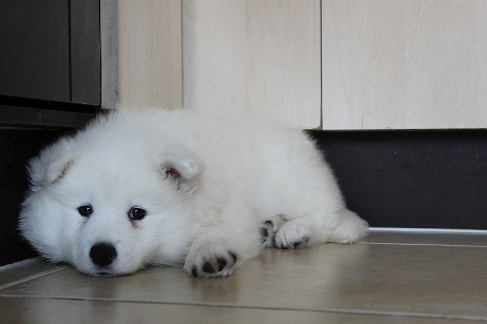

ROTANDO PANTALLA CON BOTON DEL MENU BURGUER
Akira Margarita
Mujica SalazarAkira es la Samoyedo mas hermosa e inteligente que Dios nos pudo haber regalado, es Chilena, nacida el 29 de Septiembre de 2019 en la Capital de la Region de Coquimbo, "La Serena". Una señora muy cariñosa y atenta de esa localidad del pais no las regalo, cuando la fui a buscar me invito a pasar a su casa y me ofrecio once (merienda). Su busqueda fue una odisea ya que para ese momento el pais estaba enfrentando el llamado "Estallido Social", el viaje debia ser de 5 horas, pero, por el cierre de la autopista me demore 12 horas en llegar, sali de la terminal de buses en Estacion Central a las 6am y llegue a las 6pm a La Serena. No obstante la señora pensaba que yo me regresaba a Santiago en avion (requisito indispensable para regalarme a la niña). Cuando terminamos la terturia y ellos se depidieron de Rose (si "Rose" ese fue el primer nombre de nuestra bebe) la Sra Maria le dijo a su esposo que me llevara al aeropuerto, lo que muy amablemente ambos hicieron. Ambos pensaron que abordaria un avion, pero cuando se retiraron en su auto yo pedi un uber para que me llevara a la terminal de buses (Disculpen por la mentira blanca). Ya en la terminal tuve que pagar 2 pasajes para ir solo en los asientos correspondiente, ademas, tuve que darle dinero al chofer para que me dejara subir al bus con Akira, y asi logramos llegar nuevamente a Santiago. Muy Felices.
My Daughter
Este 29 de Septiembre (2023) cumple cuatro años, cuatro años en los que nos ha regalado mucha felicidad, alegria y amor. Es una niña consentida, tanto su mamá como yo la amamos (asi algunas veces provoque lanzarla por la ventana) y espero que Dios la bendiga y proteja para que este muchos años mas con nosotros.